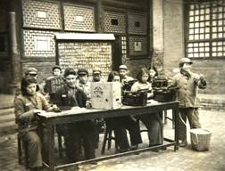
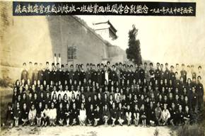
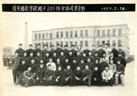

1950年初，国家进入全面经济恢复时期，为了迅速发展人民邮电事业，急需培养邮电业务管理和技术人才， 西北邮电管理局创办了陕西省邮电人员训练班和甘肃省邮电人员训练班。1952年4月1日，西北邮电管理局决定， 将陕西、甘肃两省邮电人员训练班合并，正式成立西北邮电学校。1953年6月1日，邮电部将西北邮电学校改名为西安邮电学校。 1955年5月1日，邮电部将西安邮电学校改名为西安邮政学校，正式列入国家中专学校系列，并抽调干部组建西安报务学校。 1958年5月1日，邮电部决定撤销西安报务学校，并入西安邮政学校，增设电信专业，将校名改为西安邮电学校。 1953年到1958年，西邮得到了很大的发展，成为一所以邮电管理为主，兼容电信技术专业的邮电中专，为西北邮电企业输送了大量人才。 学校加强实践教学，接办了小寨邮电局、临潼邮电局作为实习基地，取得了良好的效果。

1959年3月16日，经国务院批准，西安邮电学院正式成立。开设的专业有线电通信工程、无线电通信工程、物理师资等专业。 同年9月7日，第一批本科生200名入学。学院发扬自力更生精神，土洋结合、自制设备、开展工业生产，先后建立金工、电工、 有线、无线四个车间，生产有屋脊滤波器，氖灯小交换器等产品，创产值40余万元，同时学院还大搞科研评比，先后完成科研项目102个， 其中热敏电阻达到当时国内先进水平，学院被评为西安市文教战线先进集体和陕西省红旗单位。
 